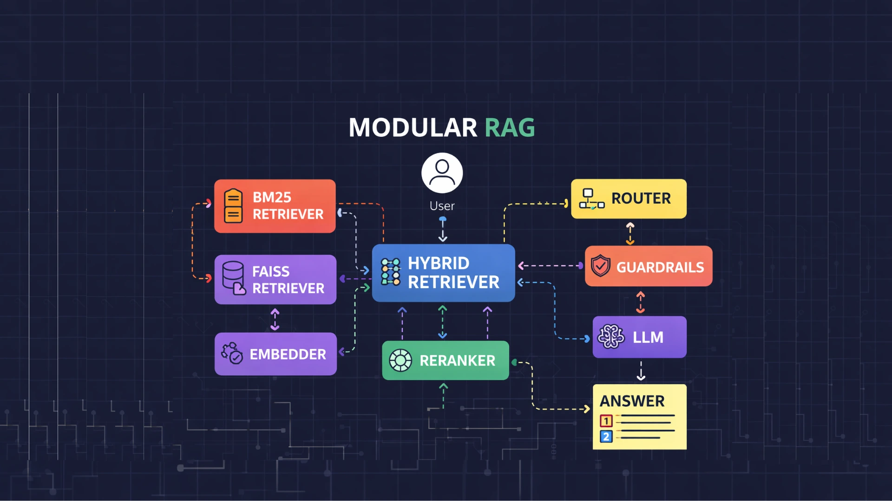
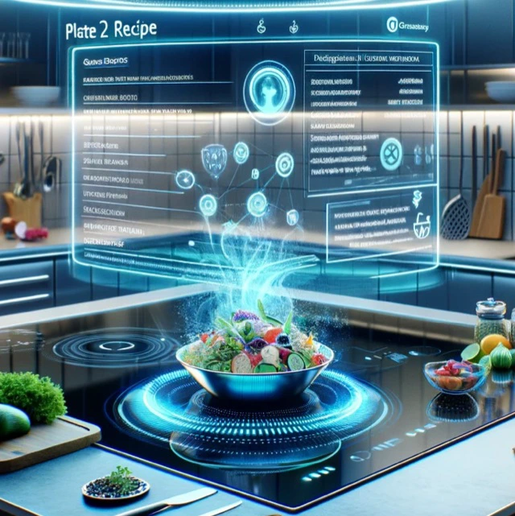
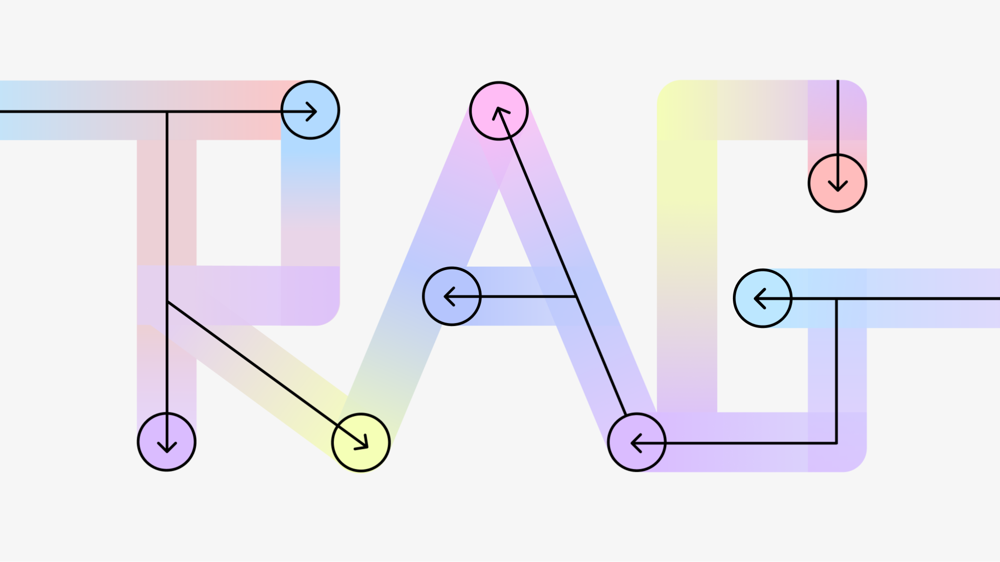
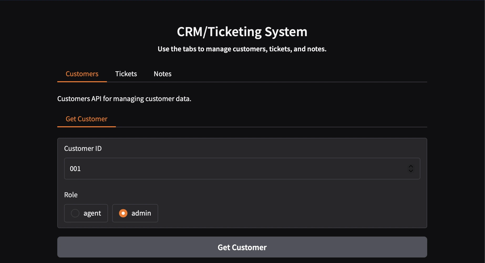
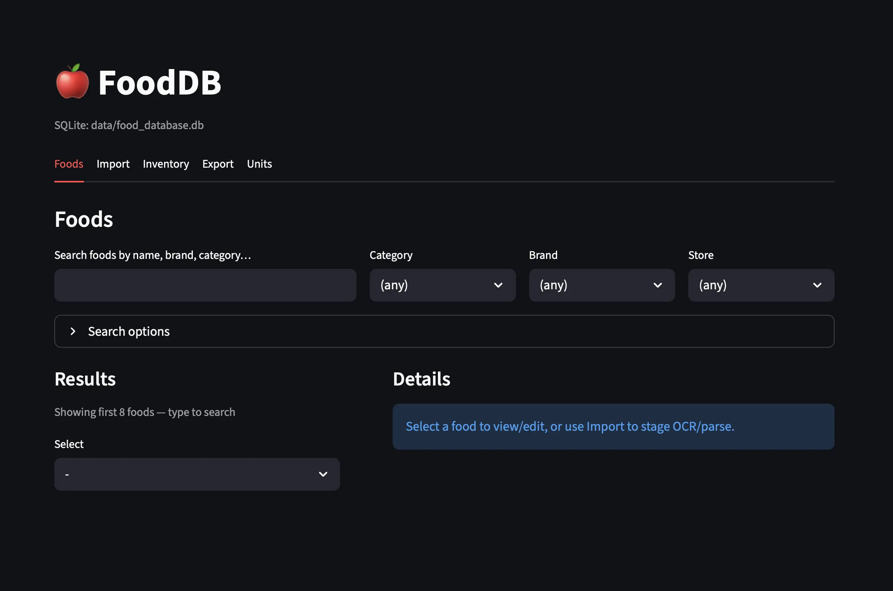
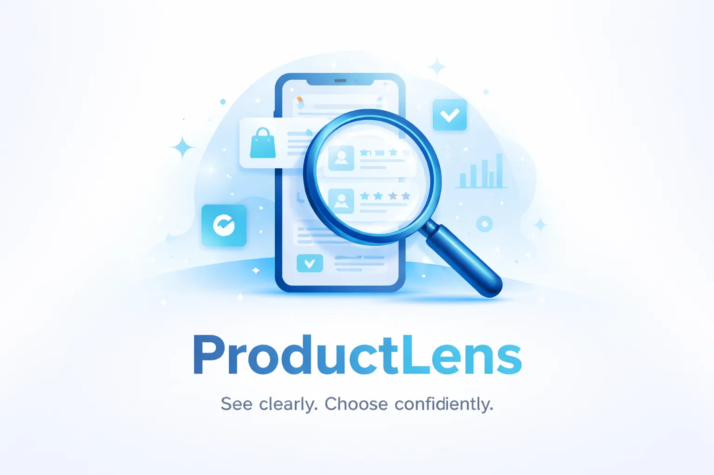
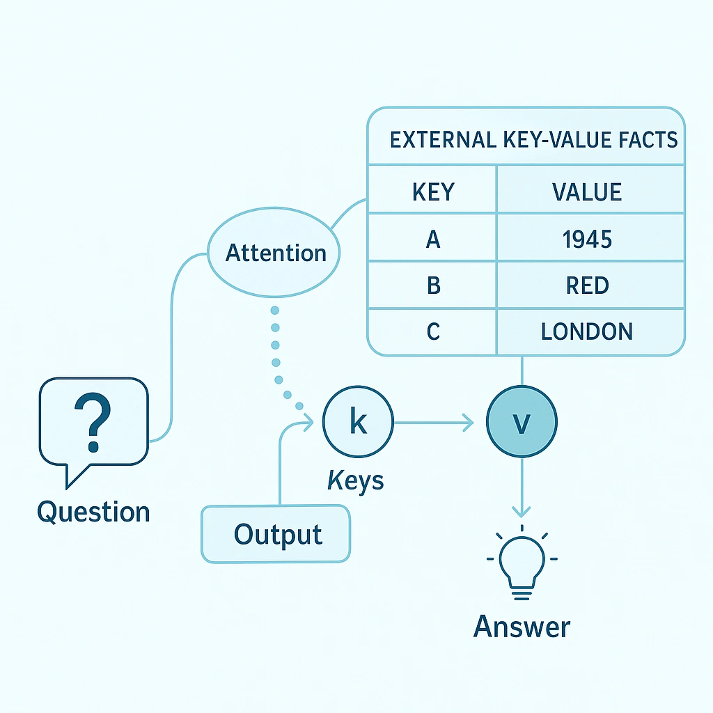
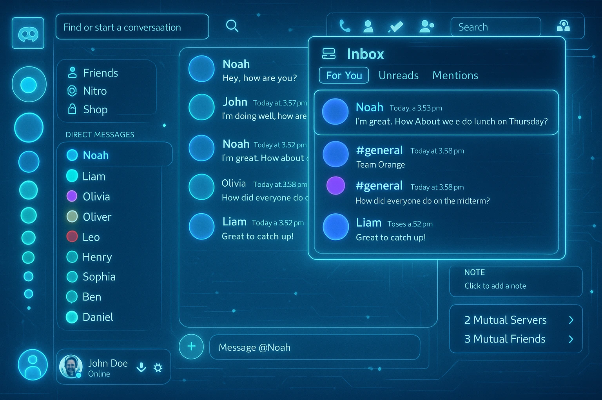

- All Projects
- AI
- DL
- NLP
- UX
- Backend / Systems

Modular RAG
Flow-based RAG framework — hybrid retrieval (BM25 + FAISS, RRF fusion, MMR reranking),
explicit wiring, vendor isolation, observability-first architecture.
Retrieval evaluation framework included (Hits@k, MRR, NDCG).

Plate2Recipe – Food Image to Recipe Generation
Two-stage multimodal pipeline: ViT ingredient recognition → GPT-2/LSTM recipe generation.
Key finding: lower training loss (100k samples) produced worse outputs than a smaller, better-tuned run (10k samples) — quality ≠ loss.

RAG System with Guardrails
RAG v1 — BM25 + FAISS hybrid retrieval, RRF + MMR, citation-aware answering. Led to Modular RAG architecture.

CRM & Ticketing System
FastAPI backend with Docker, RBAC, and a deployed HuggingFace Spaces demo.

FoodDB
Local-first nutrition facts catalogue — SQLite backend, Typer CLI, and Streamlit UI sharing one service layer. Regex parser + swappable OCR backends (Tesseract / Ollama vision).

ProductLens
LLM-driven product comparison tool that ranks products based on user priorities.
Professional TwinBot AI
AI-powered resume-grounded assistant: tool-style prompting + retrieval patterns for accurate, personalized responses.

Memory-augmented QA System
Attention-based QA over structured knowledge using memory networks.

Notification System Redesign
User-centered redesign of Discord's notification experience.